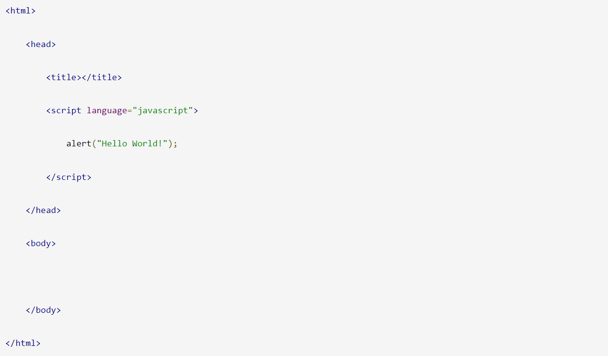
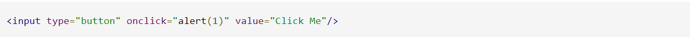
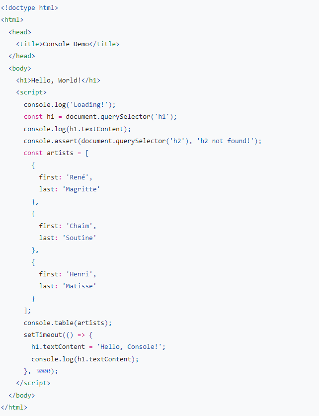
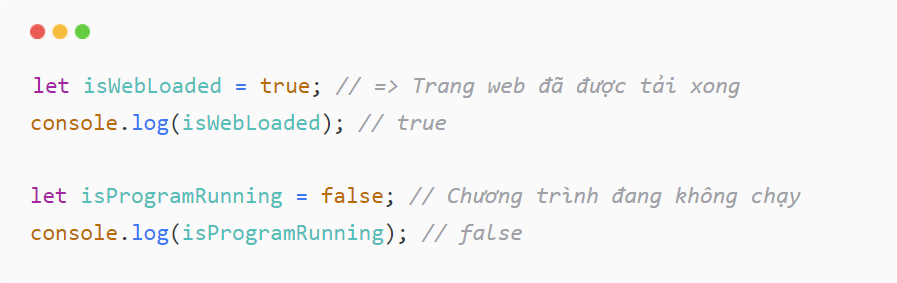
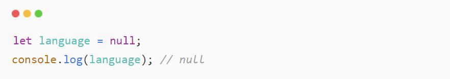
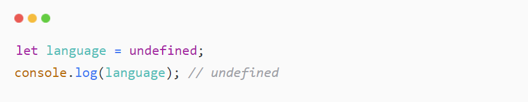
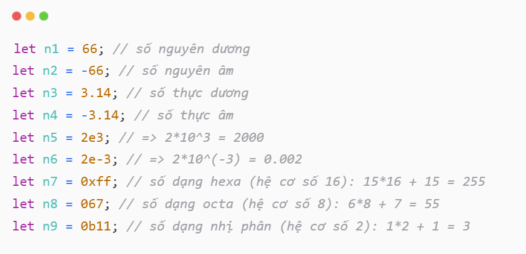
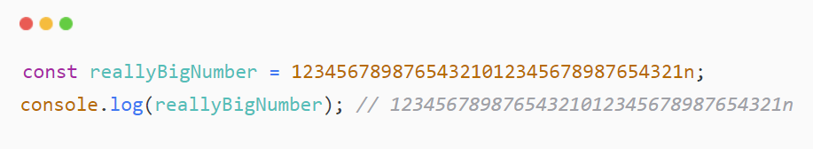
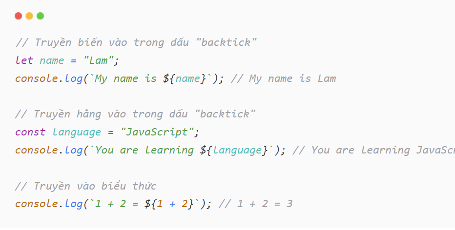
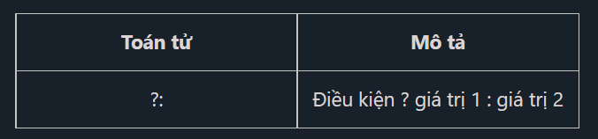

JavaScript là một ngôn ngữ lập trình website, được tích hợp và nhúng trong HTML giúp website sống động hơn. JavaScript cho phép kiểm soát các hành vi của trang web tốt hơn so với khi chỉ sử dụng mỗi HTML. Vậy ứng dụng thực tiễn của JavaScript là gì? Các slideshow, pop-up quảng cáo và tính năng autocomplete của Google là những ví dụ dễ thấy nhất cho bạn, chúng đều được viết bằng JavaScript
JavaScript là ngôn ngữ lập trình được hỗ trợ hầu như trên tất cả các trình duyệt như Firefox, Chrome, … thậm chí các trình duyệt trên thiết bị di động.
Khi tải một trang web, trình duyệt phân tích cú pháp HTML và tạo ra một loại dữ liệu gọi là DOM từ nội dung. DOM thể hiện chế độ xem trực tiếp của trang web với mã JavaScript. Đoạn mã này thực hiện cập nhật cho DOM và được trình bày ngay lập tức cho người dùng.
Trình duyệt cũng ghi nhận các sự kiện giao diện người dùng như: di chuyển chuột, nhấp chuột, v.v. Sau đó, tùy theo phản hồi của người dùng, đoạn mã sẽ thực hiện công việc được lập trình tương ứng. Sử dụng tất cả các tiện ích này, bạn có thể xây dựng các ứng dụng nhỏ để phục vụ cho một vài mục đích được cho phép.
Là một ngôn ngữ lập trình phổ biến sử dụng trên 92% nền tảng website hiện nay, JavaScript đã thể hiện vai trò quan trọng với lĩnh vực này. Tầm quan trọng của nó thể hiện qua các thao tác, công dụng như:
Nhờ Javascript, các lập trình viên có thể dễ dàng viết tập lệnh phía máy khách, tích hợp các tập lệnh một cách liền mạch vào HTML, cho phép website tương tác, trả lời người dùng ngay lập tức và tạo ra giao diện hiển thị phong phú hơn.
Các lập trình viên có thể viết mã phía máy chủ bằng JavaScript.
Javascript cho phép các nhà phát triển đơn giản hóa thành phần của ứng dụng, qua đó đơn giản hóa việc phát triển các ứng dụng web phức tạp.
JavaScript cho phép thiết kế web responsive – tối ưu trên cả máy tính và thiết bị di động chỉ với một bộ mã.
Để tham gia vào dự án Tăng tốc trang di động (AMP) của Google, các lập trình viên phải sử dụng ngôn ngữ lập trình JavaScript. Bạn sẽ hiểu rõ hơn về Google AMP qua bài viết: Google AMP là gì?
Mặc dù thiếu một số tính năng phức tạp được cung cấp bởi các ngôn ngữ lập trình hiện đại như Java và C#, JavaScript vẫn có thể dễ dàng mở rộng bằng cách sử dụng các bộ chuyển đổi như CoffeeScript, TypeScript, DukeScript và Vaadin.
Hiện nay có rất nhiều thư viện và khung được viết từ Javascript như:
Ưu điểm của JavaScript là gì?
JavaScript có rất nhiều ưu điểm vượt trội hơn so với các đối thủ khác, chẳng hạn như:
Nhược điểm của JavaScript là gì?

Không ngôn ngữ lập trình nào là hoàn hảo và không có khuyết điểm. Bởi JavaScript là ngôn ngữ lập trình phổ biến, được sử dụng rộng rãi trên nền tảng website, vì vậy nó cũng là đối tượng tiềm năng của một lượng lớn hacker, scammer – những kẻ chuyên tìm kiếm lỗ hổng và các lỗi bảo mật và thâm nhập, đánh cắp dữ liệu nội bộ.
Một số khuyết điểm của JavaScript có thể kể đến như:
Có ba cách đặt thẻ script thường được sử dụng dưới đây:
Thông thường, bạn có thể viết những đoạn mã Javascript trên phần head. Tuy nhiên, đó cũng không phải là điều kiện bắt buộc. Vì vậy bạn có thể đặt ở bất kỳ đâu tùy thích miễn là được bao lại bằng thẻ script.
Bạn có thể viết những đoạn mã Javascript ở một file có phần mở rộng là .js, sau đó dùng thẻ script để import vào. Lúc này bên trong file demo.js bạn không đặt thẻ scirpt. Vì nhờ vào đuôi .js, trình duyệt sẽ tự nhận đây là file chứa mã Javascript.
Với Inline, bạn sẽ viết những đoạn mã Javascript trực tiếp trong thẻ HTML. Ví dụ bên dưới viết dưới dạng inline vì đoạn mã alert(1) được đặt trong sự kiện onclick của thẻ button.
Các nhà phát triển web thường ghi thông báo vào Bảng điều khiển để đảm bảo rằng JavaScript của họ đang hoạt động như mong đợi. Để ghi lại một tin nhắn, bạn chèn một biểu thức như thế console.log('Hello, Console!')vào JavaScript của mình. Khi trình duyệt thực thi JavaScript của bạn và nhìn thấy một biểu thức như vậy, nó sẽ biết rằng nó phải ghi thông báo vào Bảng điều khiển. Ví dụ: giả sử bạn đang viết HTML và JavaScript cho một trang:
Hình 1 cho thấy Giao diện điều khiển trông như thế nào sau khi tải trang và đợi 3 giây. Cố gắng tìm ra dòng mã nào khiến trình duyệt ghi lại các thông báo.

Hình 1 . Bảng điều khiển.
Các nhà phát triển web đăng nhập thông báo vì 2 lý do chung:
Bảng điều khiển cũng là một REPL . Bạn có thể chạy JavaScript trong Bảng điều khiển để tương tác với trang mà bạn đang kiểm tra. Ví dụ: Hình 2 hiển thị Bảng điều khiển bên cạnh trang chủ DevTools và Hình 3 hiển thị cùng trang đó sau khi sử dụng Bảng điều khiển để thay đổi tiêu đề của trang.

Hình 2 . Bảng điều khiển bên cạnh trang chủ DevTools.

Hình 3 . Sử dụng Bảng điều khiển để thay đổi tiêu đề của trang.
Có thể sửa đổi trang từ Bảng điều khiển vì Bảng điều khiển có toàn quyền truy cập vào tệp window. DevTools có một số chức năng tiện lợi giúp kiểm tra trang dễ dàng hơn. Ví dụ: giả sử rằng JavaScript của bạn chứa một hàm có tên là hideModal. Việc chạy debug(hideModal)sẽ tạm dừng mã của bạn ở dòng đầu tiên trong lần hideModalgọi tiếp theo. Xem Console Utilities API Reference để xem danh sách đầy đủ các chức năng tiện ích. Khi bạn chạy JavaScript, bạn không phải tương tác với trang. Bạn có thể sử dụng Bảng điều khiển để thử mã mới không liên quan đến trang. Ví dụ: giả sử bạn vừa tìm hiểu về phương thức Mảng JavaScript tích hợp sẵn map()và bạn muốn thử nghiệm với nó. Bảng điều khiển là một nơi tốt để thử chức năng này.
Kiểu dữ liệu là một cách phân loại dữ liệu cho trình biên dịch hoặc trình thông dịch hiểu về kiểu của dữ liệu đang sử dụng.
Đối với nhiều ngôn ngữ lập trình, khi khai báo một biến, bạn phải chỉ rõ biến đó thuộc kiểu dữ liệu gì. Nhưng đối với JavaScript thì khác, một biến có thể thuộc bất kỳ kiểu dữ liệu nào.
JavaScript có 8 kiểu dữ liệu cơ bản, trong đó, có 7 kiểu dữ liệu nguyên thủy (boolean, null, undefined, number, BigInt, string, symbol) và 1 kiểu dữ liệu dạng tham chiếu (object).
Boolean là kiểu dữ liệu logic chỉ bao gồm hai giá trị là true (đúng, chính xác) và false (sai, không chính xác), ví dụ:
Kiểu dữ liệu null là một kiểu dữ liệu đặc biệt, chỉ bao gồm một giá trị là null, ví dụ:
Trong ví dụ trên, biến language được hiểu là không biết giá trị hoặc không có giá trị.
Cũng tương tự như null, undefined là một kiểu dữ liệu đặc biệt trong JavaScript, chỉ bao gồm một giá trị undefined, ví dụ:
Kiểu dữ liệu undefined có nghĩa là giá trị chưa được gán.
Kiểu dữ liệu number là kiểu dữ liệu dạng số (tương tự trong toán học). Number trong JavaScript không có cú pháp gì đặc biệt. Bạn chỉ cần viết số ra.
JavaScript có hai loại số là: số nguyên và số thực.
Ngoài những loại số trên, JavaScript còn có 3 số đặc biệt là: Infinity, -Infinity và NaN.
Trong JavaScript, kiểu dữ liệu number không thể biểu diễn một số nguyên lớn hơn (253-1) bằng 9007199254740991 hoặc nhỏ hơn -(253-1).
Với hầu hết các trường hợp, việc sử dụng kiểu dữ liệu number là quá đủ. Nhưng đôi khi, bạn vẫn cần biểu diễn và tính toán với những số nguyên cực kỳ lớn. Do đó, kiểu dữ liệu BigInt ra đời nhằm giải quyết vấn đề này.
Để biểu diễn số nguyên với kiểu BigInt, bạn chỉ cần thêm chữ cái n ở phía sau, ví dụ:
String là kiểu dữ liệu dùng để biểu diễn chữ, văn bản, đoạn văn bản,...
Có ba cách để biểu diễn string trong JavaScript:
Dấu nháy đơn và dấu nháy kép là hoàn toàn giống nhau.
Riêng với dấu "backtick", bạn có thể sử dụng biến, hằng hoặc thậm chí viết một biểu thức trong đó, với cú pháp ${…}, ví dụ:
Loại objectlà đặc biệt. Tất cả các loại khác được gọi là "nguyên thủy" vì giá trị của chúng chỉ có thể chứa một thứ duy nhất (có thể là một chuỗi hoặc một số hoặc bất kỳ thứ gì). Ngược lại, các đối tượng được sử dụng để lưu trữ các bộ sưu tập dữ liệu và các thực thể phức tạp hơn. Là quan trọng, các đối tượng xứng đáng được đối xử đặc biệt. Chúng ta sẽ giải quyết chúng sau trong chương Đối tượng , sau khi chúng ta tìm hiểu thêm về nguyên thủy. Loại symbolđược sử dụng để tạo định danh duy nhất cho các đối tượng. Chúng tôi phải đề cập đến nó ở đây vì mục đích hoàn chỉnh, nhưng cũng hoãn lại các chi tiết cho đến khi chúng tôi biết các đối tượng.
Toán tử là các dấu hay ký tự đặc biệt, dùng để thực hiện các phép tính của một biểu thức nào đó để cho ra kết quả cuối cùng.

Toán tử 3 ngôi là một toán tử vô cùng hữu ích trong JavaScript, toán tử này giống như là bản rút gọn của câu lệnh if-else
Toán tử với chuỗi sử dụng nhiều là nối hai chuỗi lại với nhau, sử dụng toán tử + để nối. Lưu ý toán tử này có thể nối số vào chuỗi.
Toán tử typeof trả về kiểu dữ liệu cần kiểm tra của một biến, một giá trị.
Khi chúng ta cần chuyển đổi kiểu của một value sang
string chúng ta có thể sử dụng String():
var x = 15;
var y = String(x);
alert(typeof(y)); // string
//Hoặc khi ta có 1 mảng
var a = [1, 2, 3];
var b = String(a);
alert(b); // 1,2,3
alert(typeof(b)); // string
//Tuy nhiên khi ta áp dụng với Object
var obj = {1: 'a', 2: 'b'};
var objToString = String(obj);
alert(objToString); // [object Object]
Ngoài việc sử dụng String() thì chúng ta có vẻ quen thuộc hơn
với toString(), nó cũng sẽ ép kiểu các giá trị về
string:
var x = 15;
var y = x.toString();
alert(typeof(y)); // string
//Hoặc khi ta có 1 mảng
var a = [1, 2, 3];
var b = a.toString();
alert(b); // 1,2,3
alert(typeof(b)); // string
//Và áp dụng với Object cũng chưa ra được kq mong muốn
var obj = {1: 'a', 2: 'b'};
var objToString = obj.toString();
alert(objToString); // [object Object]
Khi sử dụng toán tử, chúng ta đặc biệt phải lưu ý đến toán tử
+ khi toán hạng có kiểu string. Khi chúng ta sử
dụng toán tử + mà một trong các toán hạng có kiểu là
string thì Javascript sẽ cố gắng ép kiểu của toán hạng còn
lại về kiểu string. Hãy cùng xem ví dụ dưới đây:
// Trong trường hợp có 2 toán hạng, 1 trong 2 toán hạng có kiểu là "string"
// thì JS sẽ ép kiểu của toán hạng còn lại về "string"
alert("1" + 1); // "11"
alert(1 + "1"); // "11"
// Trong trường hợp có nhiều hơn 2 toán hạng và 1 trong các toán hạng có kiểu là "string"
// thì tùy vào vị trí của toán hạng kiểu "string" mà ta có các kq khác nhau.
alert(1 + 2 + "string" + 3 + 4); // "3string34"
alert(1 + "string" + 2 + 3 + 4); // "1string234"
alert(1 + 2 + 3 + 4 + "string"); // "10string"
// Chúng ta sẽ chuyển đổi kiểu như thế nào?
var x = 15;
var y = "" + 15;
alert(y); // "15"
Khi chúng ta muốn chuyển đổi từ một giá trị khác sang giá trị kiểu
number, chúng ta có thể sử dụng Number():
var x = "123";
var y = Number(x);
alert(y); // 123
// Hoặc với các giá trị true/false
var a = Number(true);
alert(a); // 1
// còn Number(false), Number(''), Number([]) hoặc Number(null) sẽ trả về 0
// Khi chúng ta truyền vào Number() một string không phải chứa toàn là số
// thì sẽ trả về NaN: Not a Number
var string = "string";
var toNumber = Number(string);
alert(toNumber); // NaN
// Ngoài ra khi truyền vào Object, undefined
//hoặc array có length > 2 hoặc có 1 giá trị nhưng không phải number hoặc string là số thì cũng trả về NaN
parseInt() sẽ chuyển đổi kiểu của một string về kiểu
number nhưng ở dạng interger (số nguyên)
parseInt() sẽ trả về các số nằm đầu tiên trong giá trị
string đó, nếu chuỗi đó không thể chuyển thành
number thì nó sẽ trả về NaN. Cùng xét ví dụ sau:
var a = parseInt(true); // NaN
var b = parseInt("10.00"); // 10
var c = parseInt("10.33"); // 10
var d = parseInt("34 45 66"); // 34
var e = parseInt(" 60 "); // 60
var f = parseInt("40 years"); // 40
var g = parseInt("He was 40"); // NaN
parseFloat() sẽ chuyển đổi kiểu của một string về kiểu
number nhưng ở dạng float (số thực)
parseFloat() cũng gần giống như parseInt(). Cùng xét ví dụ sau:
var a = parseInt(true); // NaN
var a = parseFloat("10"); // 10
var b = parseFloat("10.00"); // 10
var c = parseFloat("10.33"); // 10.33
var d = parseFloat("34 45 66"); // 34
var e = parseFloat(" 60 "); // 60
var f = parseFloat("40 years"); // 40
var g = parseFloat("He was 40"); // NaN
Tại sao vừa rồi ở trên chúng ta nói đến việc sử dụng + để
chuyển kiểu về string mà dưới đây chúng ta lại dùng nó để
chuyển kiểu về number. Chúng ta cùng xem ví dụ dưới đây:
var x = "15";
var y = +x;
alert(y); // 15
alert(typeof(y)); // number
Khi chúng ta thêm + và trước giá trị thì nó sẽ chuyển đổi về
kiểu number không giống như khi chúng ta sử dụng
+ trong một phép toán.
Và nó cũng trả về các kết quả giống như sử dụng
Number() trong các trường hợp cụ thể:
var a = +false; // 0 === +"", +[], +null
var b = +true; // 1
var c = +"123"; // 123
var d = +"abc"; // NaN
var e = +[1]; // 1 === +["1"]
var f = +["a"]; // NaN
var g = +{}; // NaN
Ngoài ra, khi chúng ta tính toán sử dụng các toán tử
-, *, /, %, ** thì Javascript cũng sẽ cố gắng chuyển đổi kiểu
các toàn hạng về number.
Thường khi viết code Javascript chúng ta ít khi ép kiểu các giá trị về
kiểu Boolean mà thường để tự Javascript ngầm ép kiểu, ví dụ
như sau:
var x = "string";
if(x) {
alert(true);
} else {
alert(false);
}
//KQ: true
Ở đoạn code trên, chúng ta có thể thấy Javascript đã tự động ngầm ép kiểu
của x trong if về Boolean để chạy
câu lệnh if.
Tuy nhiên, nhiều trường hợp chúng ta muốn lấy giá trị kiểu
Boolean của nó để có thể strict equal hoặc
cần hàm trả về true hoặc false thì chúng ta sẽ
sử dụng Boolean():
var x = Boolean(1);
alert(x); // true
Các giá trị khi ép kiểu sang Boolean trả về
false: 0, '', false, null, undefined, NaN. Các
giá trị này cũng được gọi là các falsy value trong
Javascript.
Ngoài các giá trị ở trên thì các giá trị còn lại đều trả về
true.
Như chúng ta đã tìm hiểu ở trên thì khi chuyển đổi kiểu từ
object sang các kiểu khác như:
string: [object Object]number: NaNboolean: true
Vậy chúng ta phải làm thế nào để chuyển đổi kiểu từ
object sang các kiểu dữ liệu nguyên thủy theo cách mà chúng
ta mong muốn nhất.
Khi chúng ta ép kiểu một object về string hoặc
number thì Javascript sẽ cố gắng tìm và gọi 3 object methods
như sau:
obj[Symbol.toPrimitive](hint) - với key tượng trưng là
Symbol.toPrimitive, nếu method này tồn tại.
obj.toString() trước và
obj.valueOf() sau nếu obj.toString() không tồn
tại.
obj.valueOf() trước và obj.toString() sau.
Hãy cùng xét ví dụ:
var obj = {
name: 'John Doe',
age: 53,
[Symbol.toPrimitive](hint) {
return hint == "string" ? `${this.name}` : this.age;
}
}
alert(String(obj)); // "John Doe"
alert(Number(obj)); // 53
Symbol.toPrimitive sẽ cho phép chúng ta quy định giá trị trả
về thông qua hint.
Methods toString và valueOf là 2 method cũ, nếu
không tìm thấy Symbol.toPrimitive thì Javascript sẽ cố gắng
gọi đến chúng theo thứ tự:
toString rồi đến valueOf nếu hint là
string
valueOf rồi đên toString nếu
hint khác string
Theo mặc định, đối với một object đơn giản:
toString method trả về một string:
"[object Object]".
valueOf method trả về chính object đó.Các biến là phần thiết yếu của mọi ngôn ngữ lập trình. Vì vậy, bạn phải hiểu những điều cơ bản của biến trước khi bạn đi sâu vào ứng dụng. Nên hôm nay mình xin trình bày đôi nét về biến Javascript.
Giống như nhiều ngôn ngữ lập trình khác, JavaScript có các biến. Các biến có thể được coi là các thùng chứa có tên. Bạn có thể đặt dữ liệu vào các vùng chứa này và sau đó tham khảo dữ liệu chỉ bằng cách đặt tên vùng chứa.
Các biến JavaScript được lưu trữ trong bộ nhớ của browser process ( tiến trình trình duyệt) hiểu nôm na 1 cách đơn giản là biến được lưu trong phần Ram mà trình duyệt đang sử dụng.
Để khai báo một biến ta sử dụng từ khóa const, let, var.
const được sử dụng để khai báo 1 hằng số, và giá trị của nó không thay đổi trong suốt chương trình.
let khai báo biến chỉ có thể truy cập được trong block bao quanh nó được xác định bằng cặp {}.
var khai báo biến có thể truy cập ở phạm vi hàm
số hoặc bên ngoài hàm số, toàn cục.
Giống như ngôn ngữ khác, cách đặt tên biến của JS cũng phải tuân theo 1 số
quy tắc sau :
một số ví dụ về khai báo biến
*// Đúng*
var person;
*// Đúng*
var _person;
*// Đúng*
var __person;
*// Đúng*
var person1;
*// SAI*
var 10persion;
Khi khai báo biến ta không cần phải khai báo kiểu của biến đó trước khi dùng. Kiểu sẽ được tự động xác định trong lúc chương trình được thực thi. Điều đó cũng có nghĩa là một biến có thể chứa giá trị của các kiểu dữ liệu khác nhau.
var test = 123 ; // test là một số
var test = "variable of js "; //test là một chuỗi
var test = true; // test là một boolean
Theo tiêu chuẩn ECMAScript xác định bảy kiểu dữ liệu như sau :
Kiểu boolean
Kiểu null
Kiểu undefined
Kiểu số
Kiểu chuỗi
Kiểu Symbol (mới trong ECMAScript 6)
Kiểu đối tượng
Có hai loại phạm vi trong JavaScript.
biến cục bộ (local scope) và
biến toàn cục (global scope). Biến toàn cục được khai báo
ngoài hàm , trong khi đó biến cục bộ được lưu khai báo bên trong một
hàm.(Nên với cùng một tên biến, ta có thể khai báo ở những hàm khác nhau).
Một biến toàn cục có thể được truy cập từ bên ngoài của hàm cũng như bên
trong của hàm nhưng, một biến cục bộ chỉ có thể được truy cập bên trong
hàm. Nếu truy cập từ bên ngoài của hàm, bạn sẽ nhận được lỗi 'undefined
variable' (biến không xác định).
ví dụ đơn giản :
var foo = 50; //<= biến toàn cục
function test() {
var bar = 100; //<= biến cục bộ
}
Ví dụ nâng cao :
function sum(a, b) {
var sum = (a + b) ; // sum là biến cục bố
return sum;
}
var result = sum(10, 20); //result là biến toàn cục
//và chúng ta có thể sử dụng biến result ở khắp nơi
function showResult(result) {
alert('sum is: ' + result);
}
showResult();
Trước hết, hàm sum được gọi là truyền hai biến trả về giá trị tổng của biến được truyền. Sau đó, giá trị trả về được lưu trữ trong biến result là biến toàn cục . Sau đó, hàm showResult () được gọi để hiển thị giá trị được lưu trữ trong biến toàn cục.
1. Sử dụng toán tử gán (=), thay vì toán tử so sánh (==) trong câu lệnh if.
var x = 0;
if (x = 10)
câu lệnh này sẽ trả về giá trị true vì 10 là true
var x = 0;
if (x = 0)
câu lệnh này sẽ trả về giá trị false vì 0 là false
để so sánh chính xác chúng ta phải sử dụng như sau
var x = 0;
if (x == 10)
2. Nhầm lẫn giữa việc bổ sung và thêm số
Cả 2 phép tính toán trên đều sử dụng toán tử cộng giống nhau.
var x = 10;
var y = 5;
var z = x + y; // kết quả của z là 15.
var x = 10;
var y = "5";
var z = x + y; // kết quả của z là "105".
3. Phá vỡ chuỗi JavaScript
javascript cho phép chúng ta chia chuỗi thành 2 dòng nhưng nếu khai báo như :
var x = "Hello
World!";
biến sẽ không hoạt động.
để biến họat động chúng ta cần khai báo như sau :
var x = "Hello \
World!";